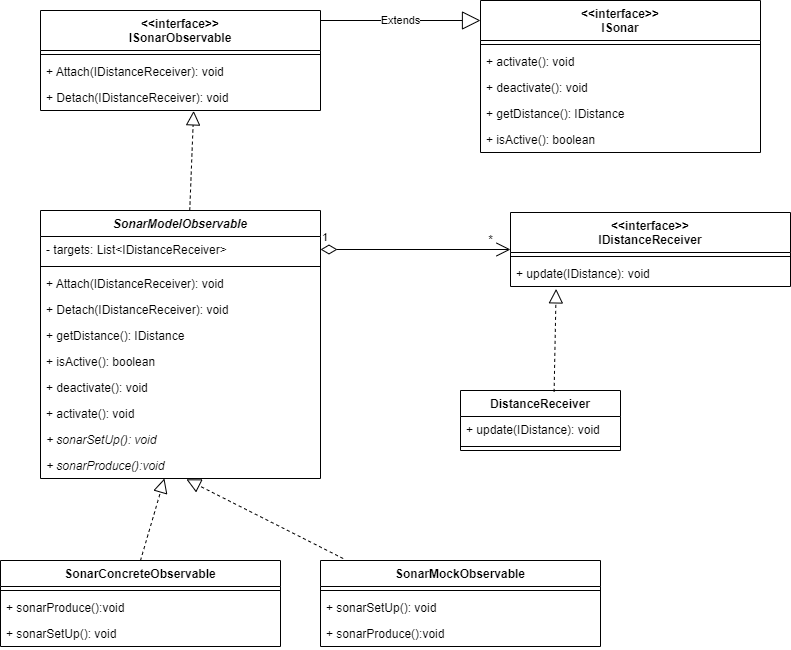

Si desidera realizzare una versione osservabile del dispositivo Sonar introdotto che soddisfi i seguenti requisiti:
il Sonar Observable deve inviare informazioni a tutti componenti software interessati alla rilevazione dei valori di distanza;
il Sonar Observable deve fornire valori di distanza solo quando questi si modificano in modo significativo;
i componenti interessati ai valori di distanza prodotti dal Sonar Observable sono denominati Observer e pssono risiedere sullo stesso nodo del Sonar Observable (cioè sul RaspberryPi) o su un nodo remoto (ad esempio sul PC);
il funzionamento del Sonar Observable deve essere testato in modo automatizzato ponendo un ostacolo a distanza fissa DTESTING1 davanti
ad esso, controllando che tutti gli Observers ricevano il valore DTESTING1. Dopo un qualche tempo, si modifica
la posizione dell’ostacolo a una nuova distanza DTESTING2 e si controlla che gli tutti gli Observers ricevano il valore
DTESTING2.
Per inviare informazioni a tutti i componenti software interessati alla rilevazione dei valori di distanza bisogna tenerne traccia in un'apposita struttura.
Cosa si intende per modifiche in modo significativo?
Per il testing si possono fare sia test con sonar simulati, sia con sonar concreti
Osservare un sonar significa osservare i valori da lui prodotti. La distanza misurata è una proprietà del sonar, dato che è lui a calcolarla.
La realizzazione proposta segue la seconda strada dell'analisi. Si propongono di seguito un diagramma UML riguardante la struttura delle classi e le interfacce che stabiliscono i contratti in gioco

Interfaccia implementata dal sonar che si renderà osservabile
Interfaccia implementata chi vuole ricevere aggiornamenti dal Sonar